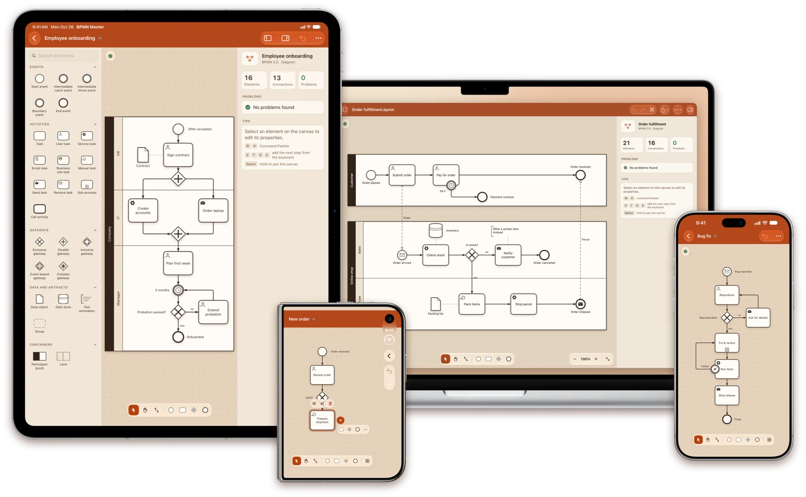
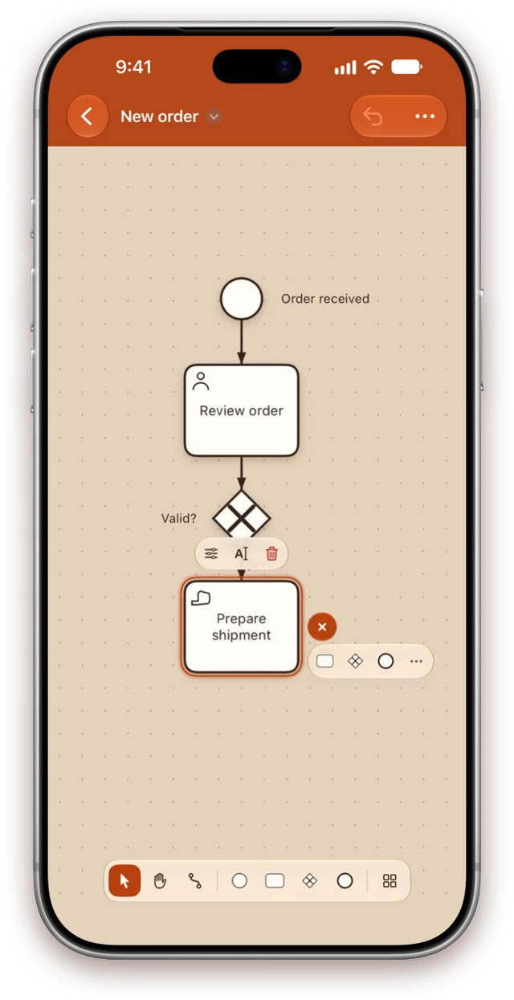
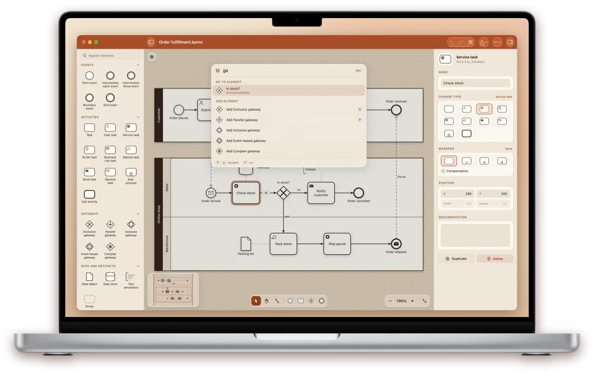
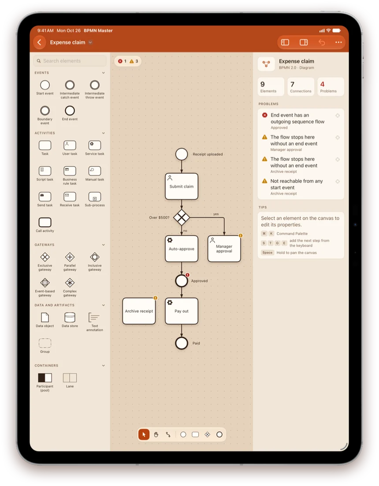
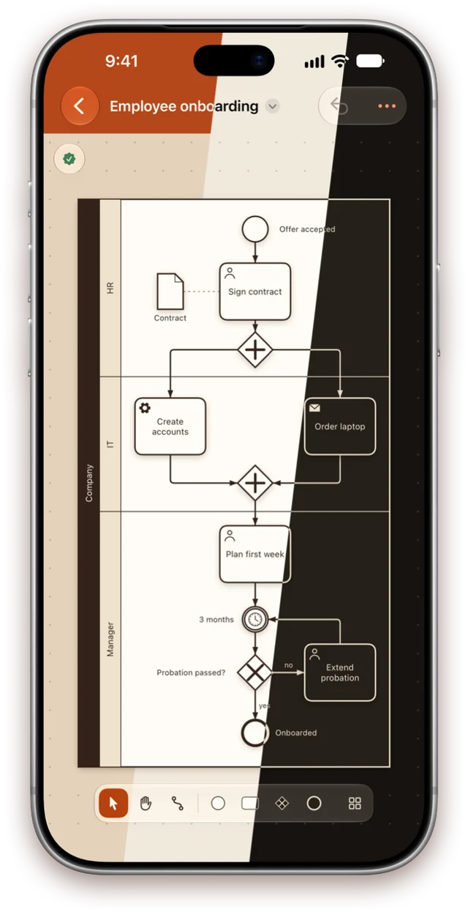

BPMN 2.0 editor
Process diagrams, native on iPhone, iPad and Mac
Open .bpmn files from other modeling tools, edit them with touch, mouse or keyboard, and save them back exactly as they were — plus your changes.
For iOS 18, iPadOS 18 and macOS 15 or later

Quick create
Build a process tap by tap
Select a step and tap “+” beside it: the next task, gateway or end event arrives already connected, placed clear of what is drawn there.
- Tap an element in the library to add it after the selection
- Or drag it onto the canvas, into the right pool and lane
- With a keyboard, type S T G E to sketch a whole flow

Made for Mac
Every action is a ⌘K away
One search field for every command, every element type and every step of your diagram, ranked as you type.
- Find elements by name, annotation text or ID with ⌘F
- Menus, keyboard shortcuts, printing and a minimap
- Press Space on a .bpmn file in Finder to preview the diagram with Quick Look

Diagram check
Catch mistakes as you draw
The diagram is checked while you edit, and problems are marked right on the canvas. Tap one in the list to jump straight to it.
- Missing flows, dead ends and steps no start event reaches
- Gateways that neither split nor merge
- Sequence flows across pools and detached boundary events

Three themes
Terracotta, Light or Dark
Terracotta takes its colours from the app icon: a terracotta bar, a warm clay canvas and pools with dark name strips. Light is bright paper; Dark is espresso with cream lines.
- Switch at any time in Settings — it applies instantly
- Exported images, PDFs and printouts always use the light paper look

Everything BPMN 2.0
A real editor, not a viewer
The full notation
Events with all 13 triggers, every task type and marker, all five gateways, pools and lanes, sub-processes, data, annotations and groups.
Your files stay intact
The whole file is kept as written, so vendor extensions and everything other tools rely on survive a save untouched.
Files without a layout
A process saved with no diagram opens with a generated layout instead of an error, ready to tidy up and save.
Share and print
Export to PNG and PDF, print scaled to the page, copy fragments as standard BPMN and view the XML source.
Private and offline
No account, no tracking, no network. Diagrams are ordinary files in storage you already use.
Seven languages
English, German, French, Ukrainian, Spanish, Japanese and Portuguese, switched without a restart.
Start with a single start event
One app for iPhone, iPad and Mac.
Get it on the App Store